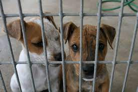

Huellitas, es una entidad sin ánimo de lucro, comprometida con promover mediante diferentes actividades la adopción responsable, la conciencia de esterilizar y recuperar animales en condición de maltrato y abandono con el fin de enseñar, contribuir y entregar una calidad de vida a todos los perros y gatos que lo necesiten.
Cifras al final de 2022:
1054 perros y gatos rescatados, recuperados, rehabilitados y entregados en adopción responsable.
Más de 15,069 animalitos esterilizados, atendidos y ayudados.
Más de 600 campañas educativas sobre tenencia responsable y sensibilización con comunidades, empresas y colegios.


Huellitas fue creada oficialmente en Agosto del año 2023 como entidad Sin ánimo de Lucro. Sin embargo, ya llevaba ocho años de trabajo independiente; nace al ver la problemática de los animales abandonados, maltratados y con la necesidad de cambiar la vida de todos aquellos perros y gatos que llegan a nosotros con la esperanza de reescribir su historia.
La Fundación ejerce su labor en Buenos Aires ofreciendo ayuda, para rescatarlos, esterilizarlos mediante nuestras brigadas, recuperarlos, rehabilitarlos y entregarlos en adopción responsable. De esa forma, se les da una segunda oportunidad a cientos de animales que han sido víctimas de maltrato, abandono y abuso.
Nuestro objetivo final es poder encontrar un hogar para cada uno de nuestros rescatados. Por eso en Huellitas ubicamos familias y personas responsables interesadas en adoptar. Adicional a esta labor nos encargamos de hacer el seguimiento a cada uno de los animales entregados.